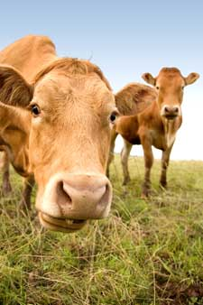

5 Reasons To Add Grass-Fed Beef To Your Grocery List
August/September 2007
It's the middle of August, time to gather your friends for thatbarbeque you've been promising to host all summer. But before yourun to the grocery store for a couple pounds of ground beef for thehamburgers, consider this: There's a healthier, safer,better-tasting alternative. One that supports small-scale farms, ahealthy eco-system and the animals' welfare. Thatalternative is grass-fed beef.
While most of the beef found in supermarkets is an engineeredcommodity, far removed from the source of protein and otheressential nutrients it formerly represented, many producers arerevisiting the 'grass roots' of the business and bringing us betterbeef. There are lots of reasons to seek out a grass-fed beefsupplier in your area ? here are five of them:
- Grass-fed beef is low in saturated fat, yet high in omega-3fatty acids, beta carotene, vitamin E, folic acid and antioxidants.Conjugated linoleic acid, thought to reduce the risk of breastcancer and diabetes, also is higher in pastured beef.
- Grass-fed cattle don't require regular administration ofantibiotics to combat the spread of infection that is common indensely packed feedlots. According to theCenters forDisease Control and Prevention, approximately 70 percent of theantibiotics and similar drugs produced in the United States areused on livestock, creating antibiotic-resistant bacteria thathealth facilities are finding hard to treat.
- Grass-fed beef production practices do not typically includethe injection of hormones to spur growth. The U.S. Food and DrugAdministration has approved six different kinds of steroidalhormones for use in food production, according to areport from Cornell University, and many are concerned thatthese pharmaceuticals increase the risk of breast cancer andreproductive problems in humans. (Wildlife, too, is affected ? thehormones are present in cattle waste and end up in creeks, rivers,lakes and ponds.)
- Grass-fed beef is much less likely to harbor acid-resistantE.coli. A diet consisting primarily of grain creates an acidiccondition in a cow's digestive system, and the bacteria thatsurvive this pH level are resistant to a human's stomach acid. Theresult is not pretty. However, a natural diet of grass does notcreate this acidic environment, and study after study has confirmedthat there is much less E. coli in grass-fed meat products. (ReadNews from Mother: Why Grass Fed is Best for moreinformation.)
- Grass-fed cattle herds have never been affected by Mad CowDisease. Large confined feeding operations will add just aboutanything to the feed they use in order to produce the most weightgain in the shortest time possible. Sometimes this includesprocessed cattle brains, which is how the disease is spread.
So go ahead and enjoy your filet mignon. Just shop responsibly.A directory of pasture-based suppliers near you can be found atEatWild orFoodRoutes.
Do you already have a favorite grass-fed beef recipe? Or afavorite source for pastured beef? Share your stories by posting acomment below.

Choose grass-fed beef for a safe and healthy alternative to supermarket options.
|
|
|